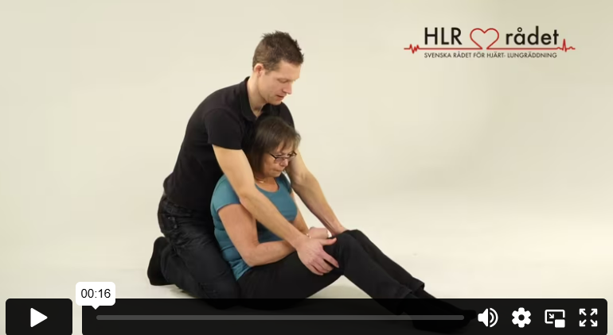
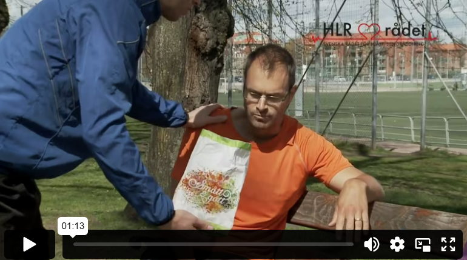
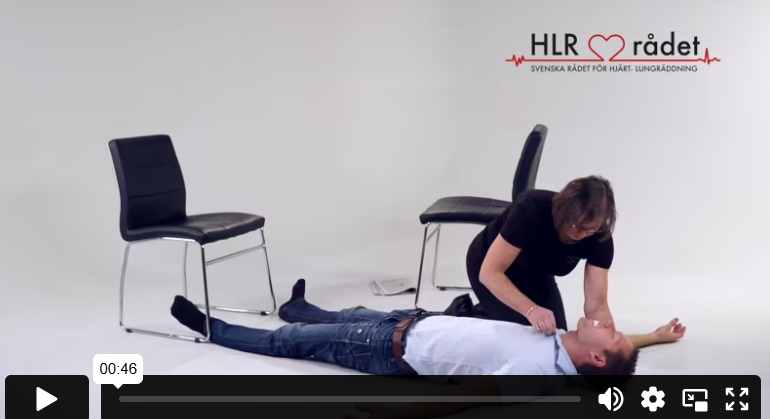

الحساسية والسكري والصرع
حساسية
بعض الأشخاص لديهم حساسية مفرطة تجاه أشياء معينة في بيئتهم، مثل حبوب اللقاح، المكسرات، أو لسعات الدبابير. قد تظهر عليهم أعراض مثل الشحوب والغثيان، أو تورم في الوجه والجهاز التنفسي مما يجعل التنفس صعبًا. في بعض الحالات، يمكن أن تكون ردود الفعل التحسسية خطيرة جدًا، حيث قد يفقد المصاب وعيه خلال دقائق قليلة، وهنا يتطلب الأمر تصرفًا سريعًا.
إذا تعرض شخص لرد فعل تحسسي خطير وواجه صعوبة في التنفس أو دوارًا – اتصل بالرقم 112. قد يحمل الشخص الذي يعرف عن تحسسه الشديد معه أحيانًا قلم حقن يحتوي على الأدرينالين، لذا اسأله إذا كان يحمل واحدًا. يجب حقن القلم في الفخذ، عبر الملابس، ويُثبّت هناك لمدة عشر ثوانٍ. بعد الجرعة الأولى، ضع الشخص في وضعية الاستلقاء مع رفع القدمين (وضعية القلب). إذا لم تنجح الجرعة الأولى من الأدرينالين، يجب إعطاء الجرعة الثانية خلال 5 إلى 15 دقيقة.
السكري
إذا بدأ شخص تعرف أنه مصاب بالسكري يتصرف بغرابة، فقد يكون ذلك علامة على انخفاض سكر الدم. قد يظهر عليه التعب والابتعاد، أو يصبح سريع الغضب، شاحبًا ومتعرقًا باردًا، أو يشعر بالدوار.
عند الاشتباه في انخفاض سكر الدم، يجب إعطاء الشخص الواعي 15-20 جرام من السكر، وهو ما يعادل 5-7 أقراص من سكر العنب. إذا لم يكن السكر أو سكر العنب متوفرًا، يجب إعطاء الشخص شيئًا آخر للأكل أو الشرب يحتوي على السكر. إذا فقد الشخص وعيه، اتصل بالرقم 112، تحقق من التنفس وضع الشخص في وضعية الاستلقاء الجانبي المستقر. لا يجب إعطاء السكر للأشخاص فاقدي الوعي بسبب خطر الاختناق.
الصرع
الصرع يعني حدوث نوبات تشنج، وخلال النوبة يقل وعي الشخص وقد يواجه صعوبة في التنفس ويصبح وجهه أزرق مائل إلى البنفسجي. في بعض الحالات قد يبول الشخص على نفسه. النوبات الشديدة قد تؤدي إلى فقدان الوعي.
أثناء النوبة لا يمكنك فعل الكثير سوى حماية مؤخرة الرأس في حال حدوث اهتزازات شديدة بوضع وسادة أو اليد تحت الرأس. لا تحاول تثبيت الشخص الذي يهتز. بعد انتهاء النوبة، ضع الشخص في وضعية الإفاقة الجانبية المستقرة. ابقَ مع الشخص وتحقق من استقرار حالته. قد تكون النوبات التشنجية أيضًا علامة أولى على توقف القلب. إذا كان الشخص فاقدًا للوعي ولا يتنفس، أو يتنفس بشكل غير طبيعي، يجب عليك الاتصال بالطوارئ 112 وبدء الإنعاش القلبي الرئوي فورًا.